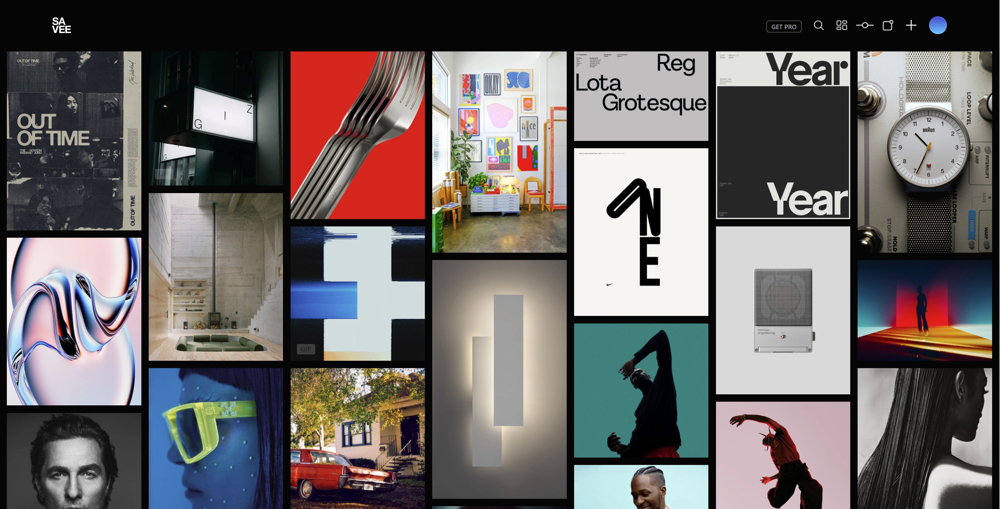

Comparative Analysis
Savee
Savee is an extensive board of photos uploaded both by users and from websites like Pinterest. What makes Savee unique is its minimal interface and its unique featureset. For instance, users can drag to select multiple images and easily manipulate the layout of the image board grid to their liking. Savee also incorporates a minimal but useful search feature that allows you to apply filters like searching by color. Overall, the user experience feels very smooth and streamlined, and there is a clear focus on the images themselves.
Pinterest is an online image sharing and social media site for uploading and finding photos. Pinterest's gallery layout of images includes unusual gaps and empty space, in contrast to Savee's optimized and fully populated board. In addition, the profiles of image uploaders are shown beneath images, further breaking up the gallery layout. However, I do appreciate how when you hover over images multiple options to save or download them appear instantly, which makes it easy to share them. The searchbar also provides numerous categories and suggestions.